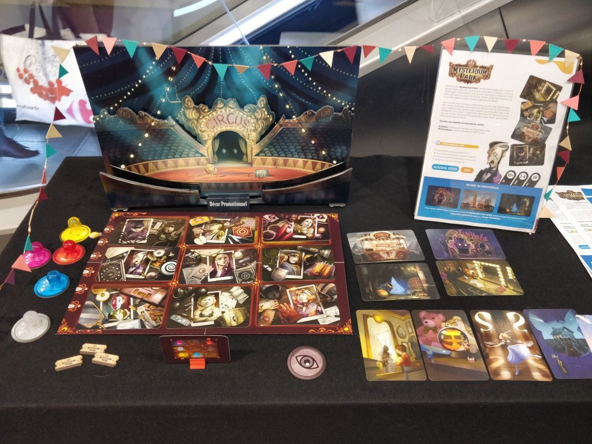

UPDATE 4:26 (Header images. Marquise. Binoculars. etc) Have you ever been wrong, like really wrong? Rear Window is a game in a genre i'd completely written off. The genre is cool in theory, but in excecution I thought it super unfun. And Rear Window proved me so wrong. Where other games in the genre zig, Rear Window zags. It challenges every assumption and reengineers the genre from first principles. Looking at this game must have been what classical painters thought when they saw Van Gogh. Ok maybe not that crazy but I think you get my point.

This genre is communication games. One player places cards out to communicate information to the other players. To say there’s a clock they might put out a bed and some gears. The most popular game in this subgenre is probably Mysterium.
Personally, I never really loved Mysterium, the game always felt very sluggish. The cards in this game are intentionally very complicated. There’s a million little details on these cards and they don’t share a common theme. When I played Mysterium it often felt like a crapshoot whether my audience would correctly guess the info. Sometimes the players would understand what I meant, but just as often the players would hyperfocus on some small detail I didn’t intend and the whole game would be lost.
Looking back at that clock example. The director put out the gear and bed because clocks have gears, and alarm clocks wake people up. Easy. Except the cards might also have (FILL IN). Now the audience are completely off track and it doesn’t feel like my fault, because all my cards are very complicated. No matter what I do there’s things to distract my audience.

I assume this frustration was intentional. The premise is simple. “If this is a game about communication, let’s make communicating hard. If the cards were easy to use there’d be no game.” I can’t argue with this. That makes sense. That’s why I’d written the genre off. But for me these limitations were not fun, just frustrating. It was like the designers handing me crayons and asking me to make a crossword. These tools are so not fit for the job that I was only frustrated. Here's Rear Windows first big departure look at these cards compared with Mysterium's!

There’s not many things for the audience to get distracted by. And all those things on the cards, they are exactly what you need to say. Need to reference the purple man? There he is! Need to say something about a musician? Look at all those instruments! Meanwhile Mysterium ask you to say there’s a musician and hand you somen BS cards like some MC Esher Stairs, a Necronomicon, and a plant growing human heads.
So Rear Window throws these complicated cards out. How is this thing interesting now? Well reader, think of a movie. It might be impressive to shoot a film in an active warzone, but it’s going to be a lot more difficult. But wouldn’t it be more FUN to make that film on a set, where you can focus on the more technical aspects of filmmaking? (DUNE FILM SET)
Rear Window replaces Myseterium’s awkward cards with more interesting decisions about card placement. First off, the shear amount of info you need to communicate is much higher than it's peer, and it gives you less cards to do it with. Mysterium only has you communicate 3 things (Colnol Mustard in the Ballroom with the Candlestick type beat). Rear Window has you do both a person and an action in 4 rooms, so 8 pieces of info. And Mysterium gives you 10 cards, While rear window only gives you 8, for over twice the info. So the director needs to think carefully on where to focus. It's not just scrambling for any info they can give, but being selective on which info the audience needs the most help with right now. These decisions are much more interesting than wrestling those stupid cards in Mysterium. But Rear Window isn’t done. (player powers)
The director isn’t the only one with these interesting gamey decisions to make, the audience does as well. The audience has these once-per-game powers. So while the audience tries to unpick the director’s logic, sprinkled in are moments of “do we want to use this power now or later” “do we think this is the best time for the power?” “Which card do we use the power on?” These are concrete mechanical decisions sprinkled into the more ethereal discussion about what the heck the director is getting at with these clues. That’s Rear Window’s secret. Arguing about the director’s weird logic is still in the game, but it’s paced out. Like any good movie, pacing is important. A whole game about nothing but wibbly-wobbly logic chains would get old fast. (arrow)
And these player powers have some sauce to them. The coolest is this arrow token. The audience chooses a card and the director places the arrow wherever they want on the card. First off, I havn’t seen this type of thing used in any game like this. Which is kinda crazy because it feels like it really plays to the genre’s strengths. But the biggest reason I love this power is how many interesting ways the audience can use it. Do they use it on a clue early to lock in some info? Do they use it really late when they will most need it? When they do use it, which clue do they use it on? Which clue are they most unsure about? Will the arrow even help them figure it out? It’s so juicy. The other once/game powers are really cool too. (picture)
Something you might notice, viewer, is that there’s a lot more game in Rear Window vs Mysterium. And I’ve saved the best gamey part of this game for last(Murderer! token)
This wouldn’t be a game about film without a really cool twist at the end. The director, that you thought was on your side this whole time, actually might be working against you! In about one-third of games, the game switches its goals. In Mysterium the director and the audience are in 100% cooperation. But in Rear Window the director might have been dealt a killer in one of the rooms. Now, the game is actually a competitive game. It’s the director vs the audience, because the director wants to keep the killer secret from the audience, and the audience wants to find where the killer is and predict the twist ending. Both teams still want 90% of the information communicated correctly, but there is direct compeition over the room with the killer in it. And, only the director knows if there even is a killer in this game. The audience not only needs to find the killer, it’s very likely there isn’t even one.
On paper this rule feels like it wouldn’t work. How is the audience supposed to guess there’s a murder if the director doesn’t want to tell them? Well, have you ever seen a murder mystery? It’s never one clue that gives it away, it’s lots of little clues that all line. One thing the audience will have to look out for, is if the director routinely doesn’t give you good clues for one room. It’s unlikely the director wants to waste their precious cards giving players info for one of the nonessential rooms, because remember for the director to win they still need to communicate 90% of the info correctly. But there’s a ton of other hints too. Just as another, example one of the audience once-per-game powers is to ask the director to verify if a given piece of info is correct, and they must answer truthfully. So if the director is trying to mislead you and have you think a character is a gardener, and you ask them to verify this with this power, they might be forced to admit that character isn’t a gardener. If the clues strongly hint this character is a gardener, but this player power showed with certainty they aren’t a gardener, you probably have to assume that character is a murderer. Again, there’s so many subtle ways to determine whether there’s a murderer I can’t go over them all here. Viewer, you might just have to trust me when I say “yeah, this mechanic is pretty great”
Because again, on it’s face this mechanic seems ridiculous. It feels there’s no way it should work, but given a ton of really subtle design choices in this game, it just works. And like I mentioned earlier, when it works it creates a very concrete little minigame the players can play to break up the crazy logic untying. Rear Window’s genius is including these little minigames to make the clue guessing shine more.
For the record btw, you could take out this module if you’re playing with a more casual crowd. You could play without a murderer and the game still plays very well. I would only play with this if I was with a more gamer-focused crowd. Making this genre more gamey is really good. If the whole experience is just trying to follow bizarre leaps in logic the game can feel arbitrary. That’s still the main course of the game, but these more gamey elements are the green beans and mashed potatoes to go with your main course.
So this game is based on a movie, a classic Hitchcock movie. If you don’t know what this movie is I will have to give you this “I’m uncultured T-shit.” I’m sorry I don’t make the rules. I myself have am dodging any “uncultured” acusations because I’ve had the wikipedia page for El Topo open in my browser for like a week. So there.
(T-shirt) Anyway, despite the movie coming out like 40… million years ago, this game was released very recently in 2022. We really are in a golden age of party games. Gone are the days of Pictionary’s tyrannical rule. Instead of just guessing words at parties we can do so much more. We are spoiled for choice for really fun and really unique and varied party games. We don’t just have to resort to guessing words based on actions and drawings. So Clover Decrypto Hue’s and Cues Wavelength All of the Jackbox Games Don’t Get Got (pictures)
figure>
We have so many tools for being funny with friends. Some of these games are more complex than others, but not all. So Clover for instance can really be played by anyone of any age. Same w/ Hue’s and Cues and Wavelength. And every year more of these games are coming out.
figure>
By the way, shout out to my Welsh friend who has bought a copy for me. At time of writing I could only find really expensive copies of this game in the US, but for whatever reason there’s plentiful copies in the UK. So my friend bought like 5 copies of this game and is distributing them to all us americans when we meet up in Serbia next summer. You know, standard operating procedure. Yeah shout out to him, you’re a real one for getting me a physical copy of this game. I hope to one day replace all the Tabletop Simulator Screenshots on this page with actual photos of the game when I get it. (go back)